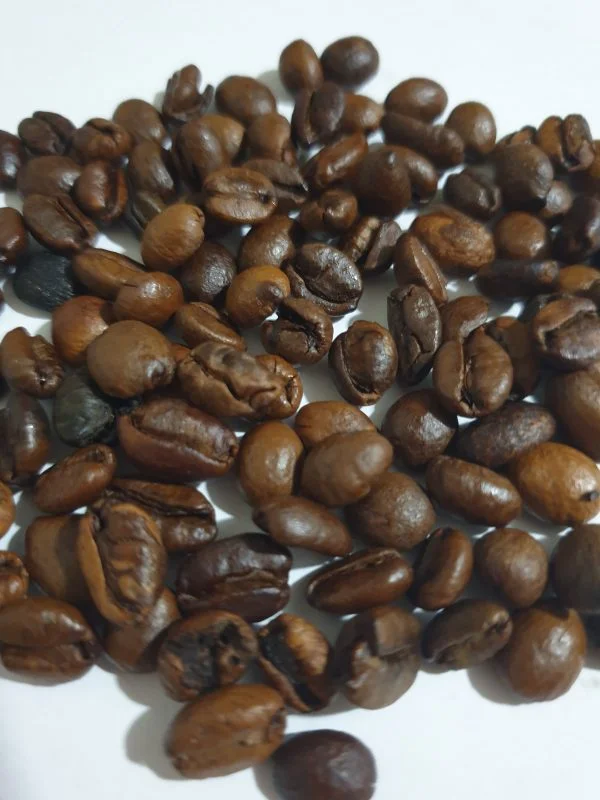

Excelsa
The final type of coffee bean we introduce today is Excelsa. Excelsa is technically a member of the Liberica family, but its species is actually incredibly distinct. Like the Liberica coffee described above, Excelsa is grown primarily in Southeast Asia and represents only a small fraction of the world’s coffee production. Excelsa does boast a tart, fruitier flavor and is known for showing attributes of both light and dark roast coffees to create a unique profile that is frequently sought out by coffee enthusiasts. (District Roasters website)